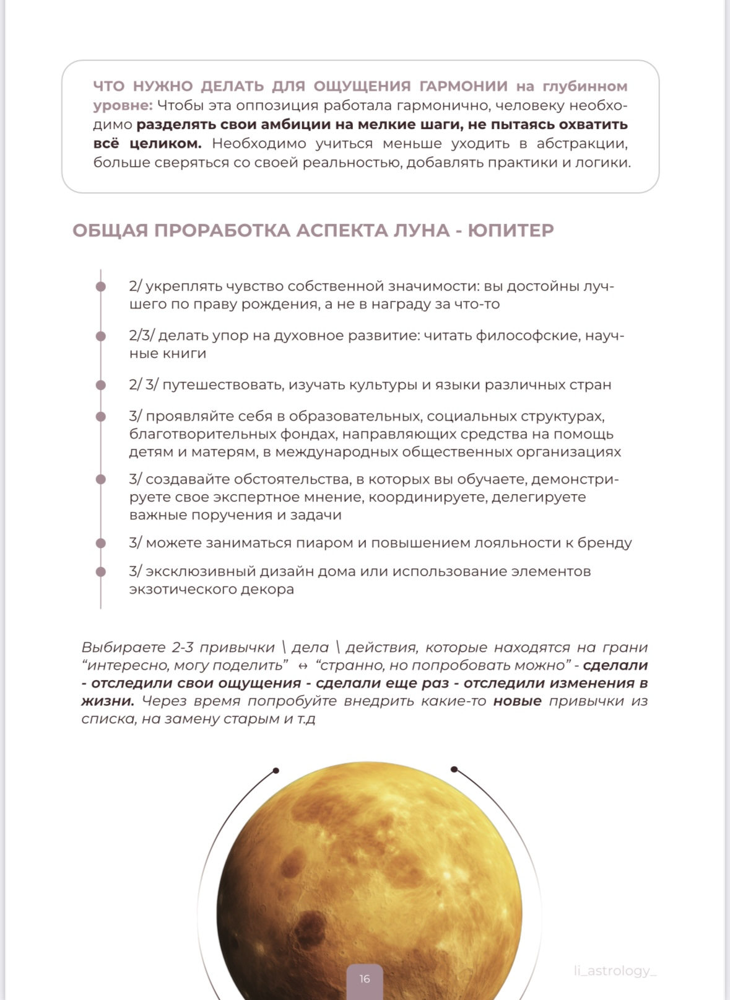
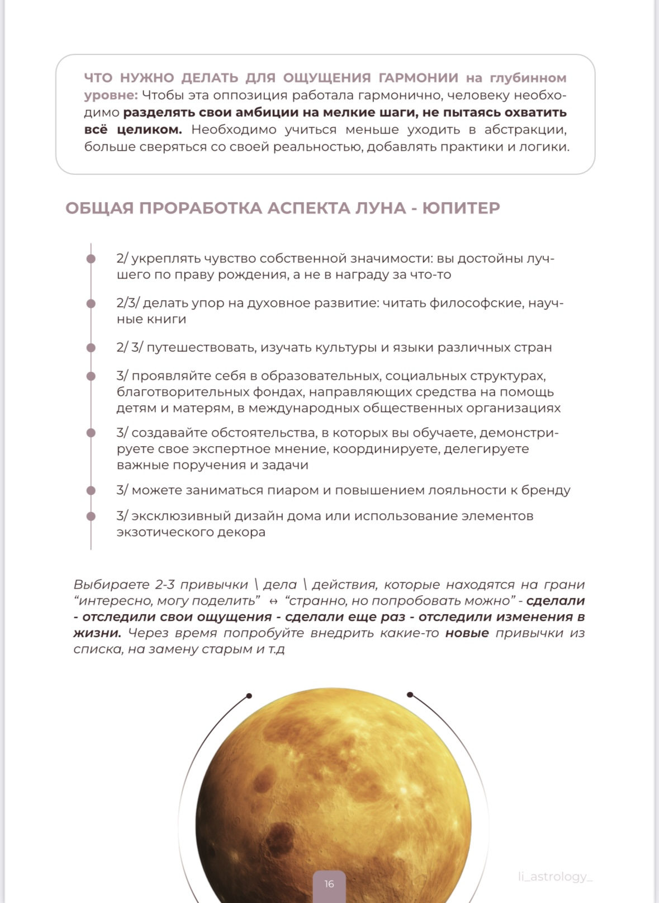
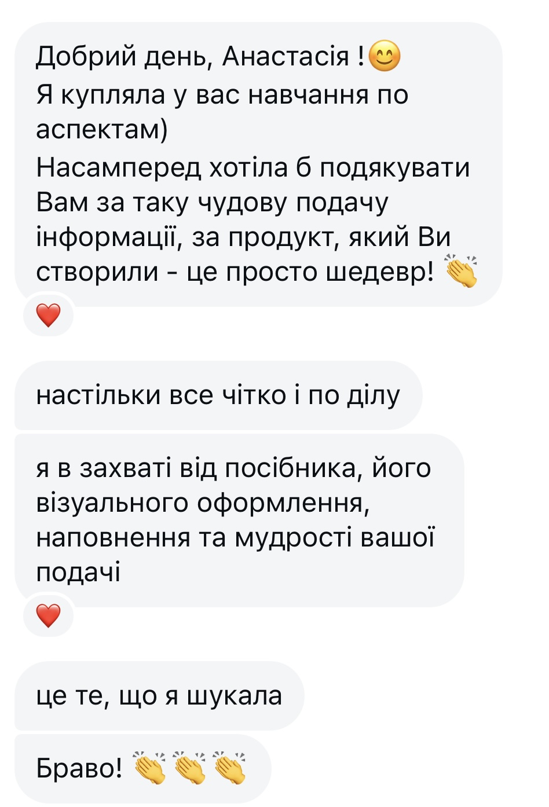
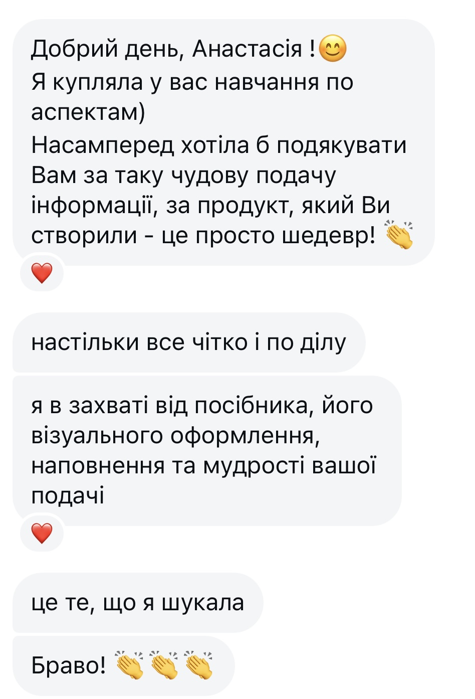

РЕЗУЛЬТАТЫ ПОСЛЕ ОБУЧЕНИЯ
ВЫ ПОЙМЕТЕ:
- свои глубинные потребности и мотивацию
- бессознательные установки, которые влияют на решения и отношения
- причины повторяющихся ситуаций и внутренних конфликтов
НАУЧИТЕСЬ ТРАКТОВАТЬ АСПЕКТЫ ПО ЧЁТКОМУ АЛГОРИТМУ:
Который применим к любой натальной карте — даже при сложных и нестандартных положениях.
ПОЙМЕТЕ ЛОГИКУ АСПЕКТОВ:
Почему они проявляют себя именно так и какие процессы запускают в жизни человека.
НАУЧИТЕСЬ ПОНИМАТЬ И ГРАМОТНО ИНТЕРПРЕТИРОВАТЬ:
А не опираться на шаблонные трактовки из книг и таблиц.
В отличие от длительной работы с психологом, натальная карта и аспекты
позволяют быстро выявить ключевые внутренние процессы.
Вы сразу видите скрытые причины происходящего и понимаете, что именно влияет на ваши
решения, состояния и жизненные сценарии.
ПОЛУЧИТЕ МНОГО ПРАКТИЧЕСКИХ ПРИМЕРОВ:
Которые сформируют уверенность при анализе аспектов и закрепят ваши навыки
СОДЕРЖАНИЕ
- Солнце и Луна - главные фигуры натальной карты
- Что важнее Луна или Солнце
- Почему важно постоянно работать с Солнцем и Луной
- Как Солнце и Луна ведут к реализации предназначения
- Знак зодиака vs аспект
- Немного об обучении аспектам
- Что такое аспекты
- Таланты, которыми наделяют аспекты
- Что такое орбис
- Допустимые орбисы
- 5 мажорных аспектов: квадратура, оппозиция, трин, секстиль, соединение
- Напряжённые - это плохо? Гармоничные - хорошо?
- Сила аспекта
- Правила чтения аспектов
- Описание характера аспектов
- Цикл аспектов
- Сравнительная таблица аспектов
- Планета в сожжении
- Планета в шахте
- Важные нюансы при чтении аспектов
- Аспекты к Луне
- Аспекты к Солнцу
- Аспекты к Меркурию
- Аспекты к Венере
- Аспекты к Марсу
- Компенсаторика и проработка: в чем разница?
- Уровни проработки
- Какие напряженные аспекты стоит прорабатывать, а какие нет
- Важное условие компенаторных действий
- Распространенные проблемы (зачатие / личная жизнь / здоровье) и как с ними грамотно работать

 

ЦЕННОСТЬ И ПРЕИМУЩЕСТВА КУРСА:
Доступ в Telegram-бот:
после оплаты открывается учебное пространство с уроками. Смотрите в любое время и с любого устройства.
Премиальный текстовый формат
с красивым дизайнерским оформлением. Пособие удобно читать с любого устройства или распечатать и использовать как книгу, к которой вы сможете возвращаться в любой момент.
Доступ к материалам навсегда:
возвращайтесь к материалам в любой момент.
Возможность использовать астрологию
как инструмент дополнительного дохода и помощи людям.
Сможете кратно повысить доход
и качество своих консультаций.
ОСТАЛИСЬ ВОПРОСЫ?
узнать детальнее
📚 ФОРМАТ ОБУЧЕНИЯ
Весь перечисленный выше материал предоставляется в текстовом формате и входит во все тарифы, независимо от выбранного варианта участия.
🎥 Видео-уроки
являются дополнением к базовой программе и доступны в расширенных тарифах.
Программа рассчитана на самостоятельное изучение.
Обратная связь и индивидуальное сопровождение в тарифах не предусмотрены.
Материал структурирован пошагово и выстроен так, чтобы вы могли спокойно изучать его в удобном темпе и возвращаться к нужным разделам в любой момент.
ВЫБРАТЬ ТАРИФ
БАЗОВЫЙ
Что даёт этот тариф:
- понимание природы аспектов;
- логику их работы;
- понятные схемы интерпретации и готовые трактовки.
ПРАКТИЧЕСКИЙ
Что даёт этот тариф:
- всё, что входит в Базовый + видео-практика на реальных картах
- сможете применять профессиональный алгоритм разбора в собственных консультациях
- демонстрация того, как аспект проявляется в жизни реального человека — сможете распознавать проявления аспекта в запросах, ситуациях и историях клиентов
- пример консультации — как грамотно преподносить информацию клиенту, на что опираться, что считать ключевым.
ПРОФЕССИОНАЛЬНЫЙ
Что даёт этот тариф:
- всё, что входит в Практический
- эксклюзивный видео-урок «Тонкости компенсаторики и проработки в астрологии»
- понимание, как грамотно доносить информацию до клиента, на чем стоит делать акцент
- рост доверия клиентов и ценности ваших консультаций
В ПОДАРОК 🎁
узнать детальнее
- ✔️ подкаст, который закрывает главный негласный страх консультирующего астролога — страх ошибиться и навредить клиенту.
- ✔️ подкаст «Как соединить показатели карты воедино? Как трактовать противоречия?»
- ✔️ урок «Солнце и Луна» в натальной карте — неклассическая, эксклюзивная информация, позволяющая работать с ядром натальной карты на уровне, недоступном большинству специалистов.
ОБО МНЕ
Меня зовут Анастасия Лисовская, я профессиональный астролог и преподаватель.
Астрология часть моей жизни уже более 10 лет.
Я объясняю глубинный смысл астрологии без мистики и обучаю грамотно консультировать на практике.
Со мной вы поймёте, что астрология — это невероятно интересная и логичная система, а уверенно консультировать гораздо проще, чем кажется, когда вы владеете теми навыками, которым я вас научу.
 
